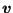
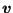

Next: *GEOMETRIC CONSTRAINT Up: Input deck format Previous: *GAP CONDUCTANCE Contents
Keyword type: model definition, surface interaction and step
This keyword is used to take heat generation due to frictional contact into account. It can only be used for face-to-face penalty contact and is only activated in the presence of slip. The heat flowing into the slave surface amounts to:
| (627) |
where f is the surface weighting factor,  the heat conversion factor,
the heat conversion factor,
 the tangential force and
 the differential
velocity between master and slave surface. The heat flowing into the master
surface correspondingly amounts to:
the tangential force and
 the differential
velocity between master and slave surface. The heat flowing into the master
surface correspondingly amounts to:
| (628) |
The heat conversion factor specifies the amount of power converted into heat. The user specifies the heat conversion factor, the surface weighting factor and the differential tangential velocity (in size). If the latter is set to a number smaller than zero, the differential velocity is calculated internally from the velocity of the adjacent surfaces. The ability for the user to specify the differential velocity is useful in axisymmetric structures for which the differential velocity is oriented in circumferential direction (cf. example ring3.inp).
The *GAP HEAT GENERATION keyword must be placed underneath the *SURFACE INTERACTION card to which it belongs. Furthermore, it can only be used in *COUPLED and *UNCOUPLED TEMPERATURE-DISPLACEMENT calculations. It is only used in face-to-face penalty contact.
There is one optional parameter USER. In the presence of this parameter the gap heat generation data are obtained from user subroutine fricheat.f (cf. Section 8.4.12). This user subroutine must have been coded, compiled and linked by the user before calling CalculiX.
First line:
The next line is only needed in the absence of USER:
Example: *GAP HEAT GENERATION 0.7,0.3,2000.
defines a heat conversion factor of 0.7, a surface weighting factor of 0.3
(i.e. 30  of the heat goes into the slave surface, 70
of the heat goes into the slave surface, 70  into the master
surface) and a differential tangential velocity of 2000 [L]/[t], where [L] is
the unit of length used by the user and [t] the unit of time.
into the master
surface) and a differential tangential velocity of 2000 [L]/[t], where [L] is
the unit of length used by the user and [t] the unit of time.
Example files: ring3.